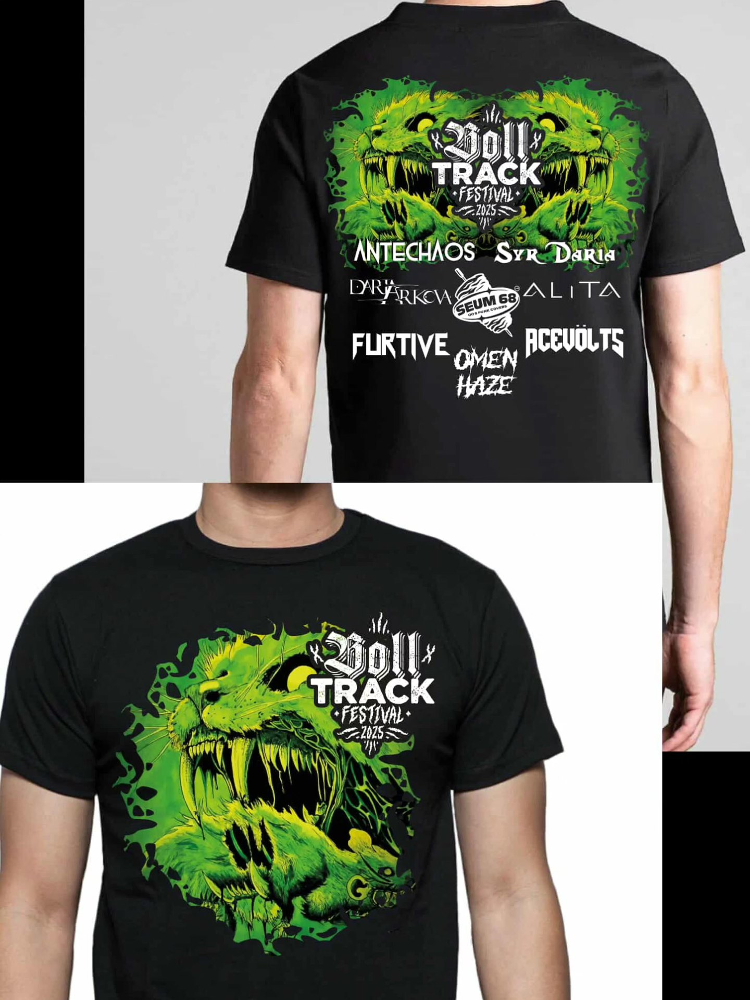

| Offre | Prix |
|---|---|
| Prévente Sur place : 20€ |
15 € |
| Prévente + t-shirt | 35 € |
| Prévente -12 ans -6 ans : entrée gratuite |
10 € |
| 24 jetons | 20 € |
| Super pack 30 jetons + t-shirt + entrée offerte |
50 € |
Le t-shirt Exclusif du Boll Track Festival est disponible uniquement en prévente !
Lors de la commande un mail vous sera envoyé pour choissir votre taille
Disponible avec le pack Prévente + t-shirt à 35 €, ou inclus dans le Super pack à 50 € (entrée + t-shirt + 30 jetons).